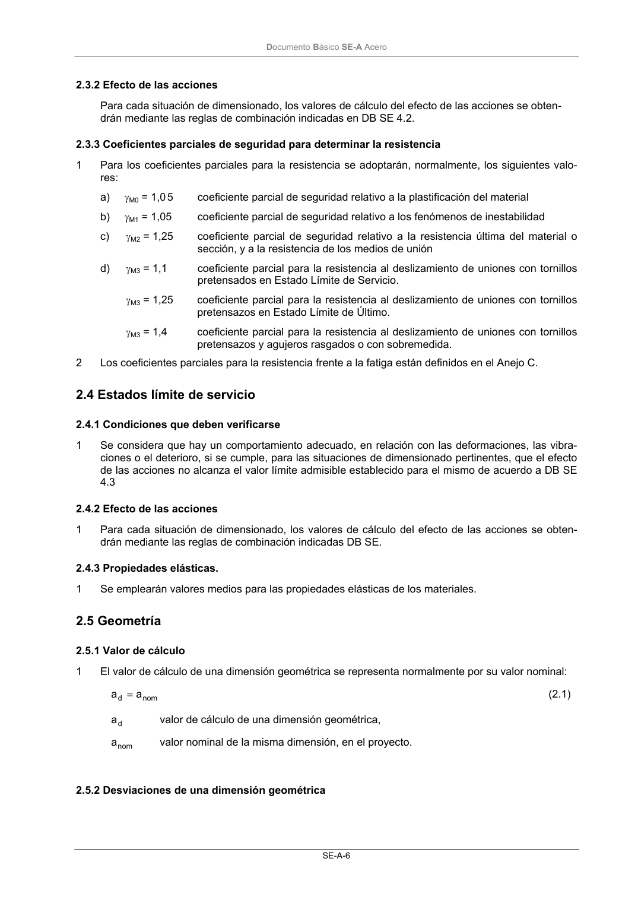

DB-SE-A Acero · edición 2007-10-23 · capa oficial
Documento DB-SE-A-oficial · SHA-256 del PDF 9ed9ea694aabfbda3bfbbef40dfe9223fde05d13c35bc2ba9751e5a96a22a64f
Copia fiel del PDF fuente · Fuente oficial
Ficha de la disposición en la fuente oficial
Formatos: JSON del segmento · Markdown
2.4 Estados límite de servicio 2.4.1 Condiciones que deben verificarse 2.4.1 Condiciones que deben verificarse 1 Se considera que hay un comportamiento adecuado, en relación con las deformaciones, las vibra- ciones o el deterioro, si se cumple, para las situaciones de dimensionado pertinentes, que el efecto de las acciones no alcanza el valor límite admisible establecido para el mismo de acuerdo a DB SE 4.3 2.4.2 Efecto de las acciones 1 Para cada situación de dimensionado, los valores de cálculo del efecto de las acciones se obten- drán mediante las reglas de combinación indicadas DB SE.
